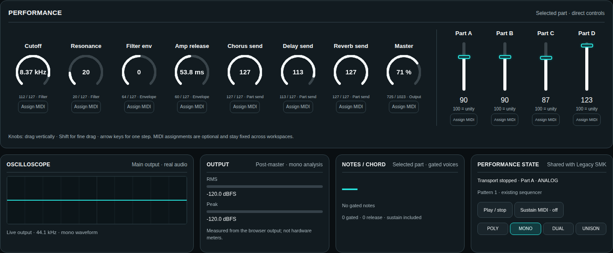
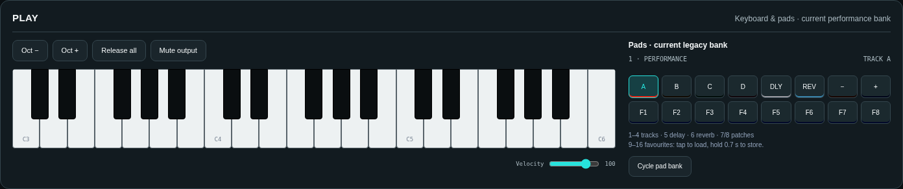
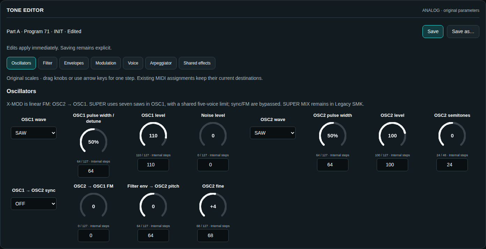
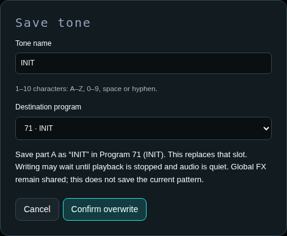
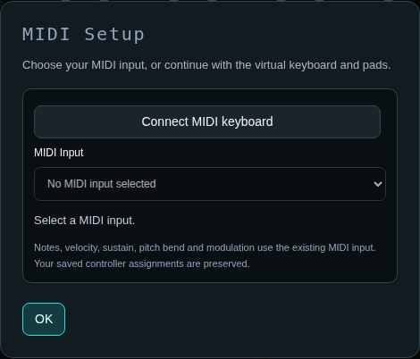
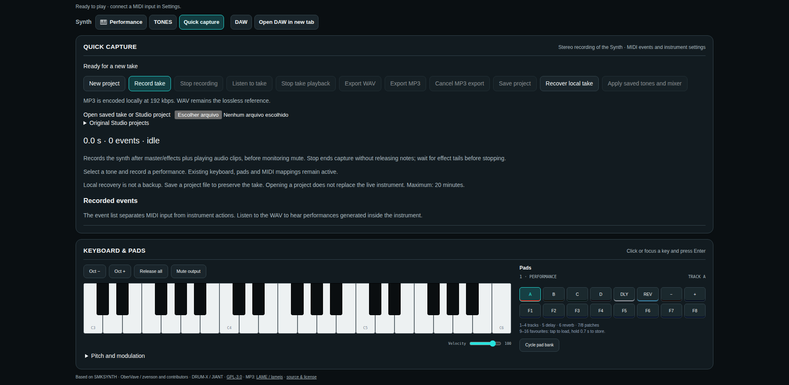
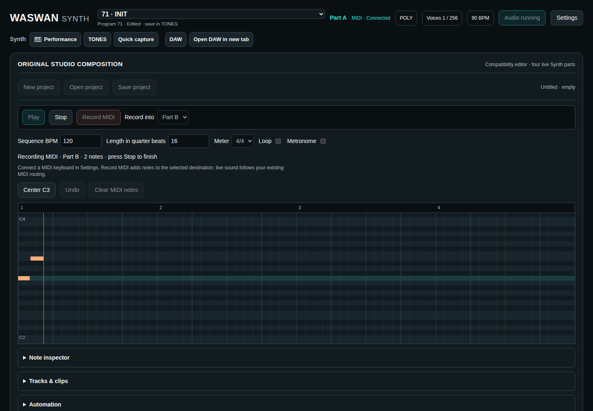
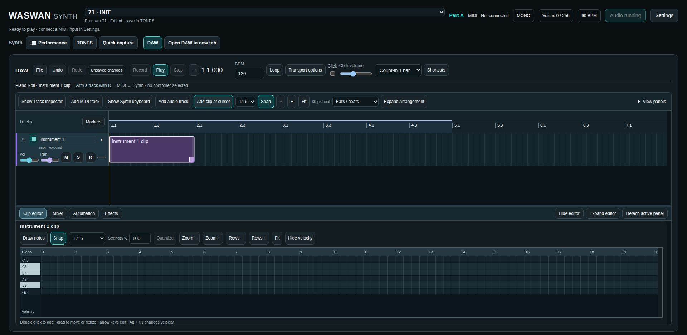

Do primeiro som à composição.
Síntese, controlador MIDI, Studio e DAW no navegador.
Leia primeiro os capítulos de início e navegação. Depois escolha uma trilha: tocar e editar sons, compor na DAW ou aprofundar os recursos do instrumento. Os exercícios ajudam a separar dúvida de aprendizagem de dificuldade da interface.
Os nomes em inglês reproduzem os botões da interface. Uma sequência como Original Studio composition → Automation indica onde clicar. K1–K8 e F1–F4 identificam os encoders e faders contextuais do padrão, não necessariamente os controles físicos já aprendidos no seu perfil.
C3 = nota MIDI 48; C4 = MIDI 60. Este guia usa a convenção do piano roll atual. Oitavas de outros programas podem ter nomes diferentes para o mesmo número MIDI.
Use os links no PDF para consultar um tema; as páginas também permitem acompanhar o percurso completo.
Sugestão: primeiro som → PERF → TONES → Save. Depois, projeto novo → Record MIDI → edição → exportação. Use Instrument setup e os apêndices como consulta.
http://localhost:8737/simulator/ no navegador usado para o projeto. Se o servidor estiver parado, consulte o quadro abaixo.cd /home/vernerb/projects/waswan-synth python3 scripts/serve-simulator.py
Na primeira preparação, execute sh scripts/setup-tools.sh e sh scripts/build-simulator.sh. Quando apenas a interface mudar e o WASM já estiver pronto, sh scripts/stage-simulator.sh atualiza os arquivos servidos. Não mude para main apenas para seguir este guia: uma revisão anterior pode não conter o Studio descrito aqui.
Toque a mesma nota com cutoff baixo e alto. Registre se encontrou o controle sem procurar e se a unidade mostrada ajudou a prever o resultado.
O cabeçalho mostra programa, parte viva, conexão MIDI, modo de voz, ocupação de vozes e tempo do instrumento. Part A é uma indicação: para mudar a parte viva, use os pads A–D no banco Performance ou Active part em Instrument setup.
| Área | O que fazer hoje |
|---|---|
| PERF | Tocar; oito controles diretos; níveis A–D; modos de voz; waveform e medidores. |
| TONES | Editar 63 parâmetros ANALOG e salvar um timbre. |
| DAW | Compor, gravar MIDI e áudio, editar clipes, automatizar e mixar. |
| Quick capture | Gravar/ouvir uma tomada do Synth, exportar WAV/MP3 e recuperar áudio local. Abra Original Studio projects para acessar o editor de composições antigas. |
| DIAG | DSP Monitor, diagnóstico de CCs e ocupação de vozes. |
| Settings | Conectar MIDI, aprender/reatribuir controles e acessar ferramentas de sessão. |
| Instrument setup | Patterns, split/layer, bateria, mixer do Synth e configurações nativas. |
Abaixo das telas ficam teclado virtual, oitava, velocity, pads, Release all e Mute output. A função dos pads depende do banco atual do instrumento; confira a legenda antes de tocar.

| Controle | Efeito e escopo |
|---|---|
| Cutoff / Resonance | Brilho e realce do filtro da parte ANALOG viva. |
| Filter env | Quanto o envelope move o filtro; centro 64 representa zero na escala bipolar. |
| Amp release | Tempo de saída da nota depois de soltar a tecla. |
| Chorus / Delay / Reverb send | Envio da parte viva aos efeitos compartilhados. |
| Master | Posição de saída global, 0–1023. O percentual não é ganho linear. |
| Part A–D | Nível de cada parte no mixer; 100 é unity. Não é o volume salvo dentro do patch. |
Os quatro primeiros controles ficam indisponíveis em DRUM-X. Não tente interpretar seus bytes como parâmetros ANALOG.
Oscilloscope desenha o áudio de saída; RMS indica energia média aproximada e Peak mostra picos observados. Valores em dBFS são leitura do navegador, não loudness LUFS nem medição da interface física.
Notes / chord reconhece apenas um conjunto pequeno de acordes exatos da parte ANALOG selecionada. “Ambiguous” ou “Note set” não significa erro de execução. Sustain pode manter vozes mesmo sem teclas pressionadas.
Voices inclui vozes em release. Um número maior que zero após soltar a tecla pode ser normal; não prova nota presa.
Suba o cutoff em passos pequenos. Compare o número interno com Hz/kHz. A tabela é musical e não linear: passos internos iguais não significam aumentos iguais em Hz.

Controlador MIDI: notas e velocity chegam pela porta escolhida. Mouse/toque: pressione as teclas virtuais. Teclado do computador: A W S E D F T G Y H U J K O L P ; acionam uma sequência cromática das primeiras teclas virtuais.
Os atalhos musicais não disparam ao editar um campo ou quando certos controles estão em foco. Clique numa área livre antes de experimentar. Oct − / Oct + mudam a oitava local; não presumem transposição de notas MIDI externas.
Sustain MIDI/CC64 mantém notas até soltar o pedal; velocity e sustain são conceitos distintos. Pitch bend segue o alcance Bend range do timbre. Modulação atua conforme o caminho do instrumento e da parte viva; não há independência ilimitada de expressão por pista Studio.
O app original ignora entrada ao perder visibilidade/foco conforme o caminho de entrada e libera notas para evitar vozes presas. A captura também pode terminar incompleta se a página for ocultada ou o áudio suspender. Para gravar, mantenha a aba ativa e acompanhe o estado.
A–D são quatro partes reais compartilhando o instrumento. Cada parte tem seu som e estado; abrir outro workspace não cria outro synth. Escolha a parte viva com pads A–D no banco Performance ou Active part em Instrument setup. O seletor de programas e TONES acompanham essa parte.
Em Instrument setup → Globals and hardware faders → Synth MIDI channel define o roteamento. OMNI usa a parte selecionada. Com canal-base 1–13, a base vai para A e os três canais seguintes para B–D. Confira também o canal transmitido pelo controlador.
| Exemplo: base 3 | A | B | C | D |
|---|---|---|---|---|
| Canal de entrada | 3 | 4 | 5 | 6 |
No Studio original, Mute/Solo da sequência filtram suas notas. Volume e Pan alteram o mixer vivo e também afetam o que você toca nessa parte. Apply saved part mixer aplica explicitamente os níveis/pans guardados na composição.
Escolha o modo em PERF ou em DIAG → Voice allocation & execution modes. O modo pertence ao timbre ANALOG da parte viva.
| Modo | Uso musical | Consumo |
|---|---|---|
| POLY | Acordes e linhas polifônicas. | Uma voz por nota ANALOG comum. |
| MONO | Baixo/lead com uma altura por vez; glide quando configurado. | Monofônico na parte. |
| DUAL | Som mais espesso com duas vozes por nota. | Maior que POLY. |
| UNISON | Empilha vozes, de 1 a 8 por nota, com detune. | Compartilha o mesmo orçamento de vozes. |
O WASWAN web oferece pool de 256 vozes ANALOG, compartilhado entre A–D. Isso não significa 256 notas em cada parte, nem 256 notas por passo do pattern. Release e unison também ocupam o pool. Bateria tem sua própria estrutura de disparos.
SUPER mistura sete serras em OSC1. PW passa a atuar como detune; SUPER mix fica em Instrument setup → DRUM-X and SUPER oscillator. Há um limite compartilhado de cinco vozes SUPER; as sete serras não são sete notas de polifonia. OSC2 não oferece SUPER. Sync e FM ficam indisponíveis/bypassados nesse contexto.
Com o mesmo timbre e volume confortável, compare POLY, DUAL e UNISON. Depois observe DIAG. Aumentar o número de vozes pode aumentar o nível percebido; não confunda isso com timbre melhor.

Escolha um programa, abra TONES e entre em Oscillators. Edições são ouvidas imediatamente e marcam o patch como Edited; ainda não representam Save concluído.
Uma lista desabilitada ou indisponível pode refletir engine DRUM-X, SUPER ou operação pendente. Use o contexto indicado pelo editor; não force outra interpretação dos valores.
Cutoff define a região de corte; Resonance destaca sua vizinhança. Filter envelope amount controla o movimento pelo envelope, com centro bipolar. Key tracking faz o comportamento acompanhar a altura tocada.
| Tipo | Resultado típico |
|---|---|
| LP12 / LP24 | Atenua agudos; LP24 tem inclinação maior. |
| HP12 | Atenua graves. |
| BP12 / NOTCH | Deixa uma faixa passar / reduz uma faixa. |
| SEM + Morph | Varia a resposta conforme a implementação SEM original. |
Drive acrescenta caráter ao caminho do filtro. Velocity → filter/amp definem como a força da nota muda brilho e nível.
Attack leva ao pico; Decay desce até o nível de Sustain; Release termina depois do note-off. Existem dois ADSR: um de filtro e um de amplitude. Sustain do envelope é um nível; sustain do pedal é manter a nota.
Num timbre de teste, aumente Amp attack e release para criar entradas/saídas lentas. Depois use ataque curto, sustain baixo e decay audível. Repita no Filter envelope com envelope amount diferente de zero para ouvir a curva no brilho.
Há um LFO, com formas TRI, SAW, RAMP, SQUARE, S&H e RANDOM. Rate define velocidade, Delay o atraso de entrada e Phase escolhe SYNC, FREE ou SPREAD.
As intensidades para pitch, PWM, filter e amp são separadas. Pitch destination e PWM destination escolhem OSC1, OSC2 ou BOTH. Mod depth (legacy) conserva o comportamento original; não é uma nova matriz de modulação. PWM não vira modulação de desafinação do SUPER.
Mode, Unison voices, detune e Glide controlam execução. Vintage acrescenta variação; Spread distribuição estéreo; Bend range define o alcance de pitch; Volume é o nível do patch. Faça mudanças pequenas e compare com o mesmo acorde.
Modos OFF, UP, DOWN, UP/DN, RANDOM e PLAYED; divisões de 1/4 a 1/32 com opções de tercina; octaves amplia a faixa e gate ajusta duração. Edite o arpejador em TONES → Arpeggiator.
O arp usa o tempo do instrumento. O transporte Studio tem seu próprio BPM; não assuma que mudar um tempo altera automaticamente o outro. A reprodução de notas Studio bypassa o arp para executar o que está no piano roll.
Escolha TRI, uma velocidade lenta e um pouco de LFO → filter. Zere essa profundidade e compare LFO → pitch. Depois ligue ARP UP e toque três notas. Identifique qual controle muda ritmo e qual muda timbre.
Chorus, delay, reverb e drive pertencem à estrutura existente. O ponto mais importante é distinguir quanto cada parte envia de quanto do efeito retorna à mistura.
| Onde | O que controla |
|---|---|
| PERF: send | Chorus/delay/reverb da parte selecionada. |
| TONES → Shared effects | Retornos e parâmetros globais de chorus/delay/reverb, ligados à parte A/settings. |
| TONES → Shared effects | Chorus, delay, reverb e drive; controles especiais permanecem no original. |
| Instrument setup → Parts and mixer | Envios por parte, incluindo drive, e linha MASTER. |
Chorus: Rate, Depth e retorno. Delay: Time em divisões musicais, Feedback, Tone e retorno. Reverb: Size, Damping, Pre-delay e retorno. Drive compartilhado: Type, Drive, Tone e Mix.
Se o retorno estiver em zero, aumentar send pode parecer não funcionar. Alterar Shared effects em uma parte B–D não cria uma cadeia privada: o efeito continua compartilhado e o estado correspondente pertence à parte A/settings.
Comece com send baixo. Aumente o retorno do reverb e só depois o send da parte. Compare duas partes com sends diferentes e o mesmo retorno. Para delay, altere o BPM do instrumento e escute a divisão sincronizada.

O seletor do cabeçalho mostra os 99 programas reais: 1–64 de fábrica, 65–70 VIBE e 71–99 INIT na base atual, salvo conteúdo substituído pelo usuário. Trocar um programa Edited pelo seletor pede confirmação de descarte; não salva automaticamente.
A interface distingue alteração em RAM, escrita no instrumento simulado e persistência no navegador. Em falha de armazenamento, exporte a sessão por Settings. Não conclua que está salvo apenas porque Edited sumiu.

Use Start audio → Connect MIDI keyboard → MIDI Input → OK. A mesma conexão fica em Settings. Abrir o diálogo não cria mappings nem configura um mapa presumido dos oito knobs e quatro faders.
O perfil precisa estar habilitado. Uma fonte aprendida assume um destino; reaprender pode substituir a associação anterior. Não aprenda CC64 se ainda quiser usá-lo como pedal, nem CC1 se quiser sua função de modulação. CC120–127 não são destinos de aprendizagem.
| Formato | Como reconhecer |
|---|---|
| Absolute · 0–127 | O controle envia sua posição. Em destinos semânticos e K1–K4 Fine, há captura suave antes de assumir o valor. |
| Relative · 65 / 63 | 65 aumenta, 63 diminui; 64 é neutro e 0 é ignorado. |
| Relative · 1 / 127 | 1 aumenta, 127 diminui; 0 é neutro. |
Pickup/Catch evita salto: o knob físico precisa alcançar ou cruzar a posição salva. Após trocar parte, programa ou contexto, pode ser preciso capturar de novo. Mova lentamente através do valor, não reaprenda tudo sem necessidade.
Fine trabalha em uma unidade interna nos destinos diretos elegíveis. Normal conserva a resposta original; nos encoders físicos pode haver aceleração. K5–K8 permanecem contextuais/normais; faders usam posição absoluta e o modo JUMP/CATCH existente. Menus especiais podem não aceitar Fine: siga a indicação de disponibilidade.
A entrada web suporta notas/velocity, pitch bend, CC1 para modulação, CC64 e CC120/123; os CCs aprendidos passam pelo perfil. A ponte web não expõe saídas MIDI, SysEx, Program Change externo ou transporte/clock externos. Uma tabela de CCs do firmware físico não significa que todos são encaminhados pelo navegador sem mapping.
O perfil fica separado da sessão/timbres. Um backup de sessão ou .wsproj não é exportação portátil desses mappings. Registre suas atribuições para refazê-las em outra origem/perfil de navegador.
Salve um cutoff baixo na parte, deixe o knob físico alto e troque de parte/programa. Tente um pequeno movimento: deve aguardar captura. Cruze a posição e registre se a indicação de pickup foi compreensível.
Em Performance, abra Instrument setup no painel do instrumento. Cada grupo controla o motor que já está tocando. Teclado e pads usam o mesmo dock ao trocar de tela.
Em Parts and mixer, escolha A, B, C ou D em Active part. A parte selecionada define o destino de TONES, dos favoritos e dos ajustes de DRUM-X.
Ajuste nível, pan, mute e solo por parte. Os envios para chorus, delay, reverb e drive usam a escala de 0 a 127 do instrumento. Master and shared drive reúne o nível do mixer, filtro, drive e compressor da saída.
Use Performance para tocar. Abra Pitch and modulation abaixo do teclado para mover as rodas. Release all libera teclas e pedal. Mute output atua na saída de escuta.
Em Instrument setup → Patterns, favorites and instrument sequencer → Instrument sequencer, escolha o banco dos pads. Cycle pad bank no dock alterna os bancos do instrumento.
| Banco | Função |
|---|---|
| Performance | Partes A–D, envios rápidos, programas e favoritos. |
| Sequencer | Passos e execução durante a gravação do pattern. |
| Patterns | Slots 1–16. |
| Split / Layer | Configurações de teclado e seleção da fileira tocada. |
| Drum pads | Oito sons do kit da parte DRUM-X selecionada. |
Em Globals and hardware faders, Switch hardware fader bank alterna A/B. No banco A, a parte ANALOG oferece cutoff, ressonância, intensidade do envelope de filtro e release. O banco B controla três envios e o volume físico de saída. Os quatro faders da Performance controlam nível das partes A–D.
Fader response seleciona Catch, que aguarda a passagem pelo valor atual, ou Jump, que aplica a posição física imediatamente.
Selecione a parte e abra Patterns, favorites and instrument sequencer. Escolha um de oito slots e use Save selected part to favorite. Confirme ao substituir um slot ocupado. Load favorite reutiliza o som e os envios guardados na parte selecionada.
Escolha um dos 16 slots em Pattern slot. Load pattern seleciona a composição do instrumento e pode enfileirar a mudança durante a reprodução. Save pattern to slot guarda no slot selecionado e pede confirmação para substituir. Aguarde o fim da escrita ou pare o transporte quando houver uma gravação pendente.
Os arquivos de projeto da DAW guardam a composição da DAW. Exporte uma sessão em Settings para preservar também a memória do instrumento.
Em Instrument setup → Split / Layer, escolha Row 1 ou Row 2. As duas configurações pertencem ao pattern.
O monitoramento e a gravação da DAW continuam usando a pista e a fonte escolhidas no Track inspector.
Em Patterns, favorites and instrument sequencer, abra Instrument sequencer e escolha o banco Sequencer. Os pads passam a controlar os passos. Focus pads leva ao primeiro pad disponível.
O gravador da DAW tem transporte próprio. Para capturar um pattern nativo como áudio, use o gravador de performances do Synth.
| Vista | Uso |
|---|---|
| Parts | Contexto da parte, comprimento e ajustes da trilha. |
| Steps / More per step | Controles dos passos, com rótulos da vista e da seleção vigente. |
| Track | Duração, divisão e ajustes gerais da parte. |
| Patterns | Seleção e contexto dos slots do instrumento. |
| Transpose / Endless | Controles de transposição e repetição do firmware, conforme o contexto da parte. |
Selecione uma vista em Instrument sequencer. Os controles válidos aparecem com seus valores atuais. Os pads permanecem no mesmo teclado virtual.
Escolha o banco Sequencer para editar um pattern de bateria. A vista Steps oferece a lane ativa e os parâmetros disponíveis para o step. TONES edita timbres ANALOG.
Globals and hardware faders reúne tempo, click do instrumento, canal MIDI base, microafinação e sincronização. O tempo e o click da DAW ficam no transporte da própria DAW.
Porta do controlador, perfis contextuais e aprendizados de entrada ficam em Settings.

A tomada inclui synth após master/FX e os clipes de áudio que estiverem tocando, antes do mute de monitoração. Não grava microfone ou áudio de outros aplicativos. O metrônomo Studio fica fora.
São três registros diferentes: entrada MIDI recebida, comandos encaminhados e mudanças de parâmetro observadas depois de mapeamento/pickup. O evento recebido não prova que mudou o som.
As instruções deste capítulo e dos seguintes cobrem projetos Studio originais. Abra Synth → Quick capture → Original Studio projects → Open Studio composition editor. Para compor na DAW, consulte o capítulo 45.
New project em Quick capture ou no editor Studio original limpa notas, clipes, expressão, automação, fontes de áudio em memória, tomada, seleções e Undo. Também para fontes/vozes pertencentes ao Studio e cancela a codificação MP3.
Se houver trabalho, confirme o descarte. Durante gravação, carregamento ou preparação, conclua/cancele a operação antes de New. Os padrões voltam a 120 BPM, 4/4, quatro compassos, Part A, Loop/metrônomo desligados, compasso 1 e C3 visível.
New não reinicia o instrumento, não aplica outro timbre/mixer, não remapeia o controlador e não apaga as recuperações locais.
Open saved take or Studio project aceita .wsproj do Studio. Um erro ou Cancel preserva o projeto atual; substituir um candidato válido pede confirmação quando há conteúdo. Abertura conserva os sons vivos.
Apply saved tones and mixer, em Quick capture, é outra ação, explícita: substitui o contexto vivo em RAM após aviso. Não escreve presets. Projetos mais antigos sem snapshot completo podem não permitir essa restauração.
Na DAW, File → Open DAW project oferece abrir o Studio original ou criar uma cópia DAW editável em outro arquivo. A cópia converte notas, áudio e automação de volume/pan. Para expressão, efeitos compartilhados e outras automações, escolha o Studio original.
| Lugar | Conteúdo / consequência |
|---|---|
| RAM do workspace | Composição em edição. Recarregar pode perder o que não foi guardado. |
| Navegador (OPFS) | Última tomada progressiva e cópia explícita de composição; depende da mesma origem/perfil. |
| Arquivo .wsproj exportado | Cópia portátil de composição, contexto, tomada e fontes anexadas. Guarde fora do armazenamento do site. |

Gravar adiciona uma camada, preservando as notas existentes. Para substituí-las, use Clear MIDI notes ou New project antes. Em uma captura sem notas externas, leia a mensagem; a tomada de áudio fica disponível em Quick capture.
Clique numa célula vazia para desenhar uma nota da parte de edição; clique numa nota para selecionar. O Note inspector abre com pitch MIDI, parte, velocity, início e duração. Confirme com Apply note edit. A lista Sequence notes permite escolher sem acertar um retângulo pequeno.
Setas movem a nota selecionada; Delete/Backspace removem. Undo conserva até 16 estados de edição. Não há redo Studio nesta entrega. Níveis/pans já aplicados ao mixer não são restaurados como um undo de áudio.
Start beat começa em 1; Duration in quarter beats usa semínimas. Em 4/4, quatro compassos equivalem a 16 quarter beats. Em 6/8, um compasso corresponde a três quarter beats; não trate todo número de beat como uma colcheia.
O modelo usa PPQ 960; a edição por grid e Quantize to 1/16 não é a resolução total dos dados. Quantize altera notas/durações explicitamente e pode ser desfeito; a captura não quantiza automaticamente.
Play reproduz do começo; Stop termina as notas/fontes Studio. Clear MIDI notes pede confirmação e remove notas/clipes MIDI e sua expressão. Conserva automação, áudio e tomada, com Undo disponível. New project limpa o conjunto completo.
A 120 BPM/4/4, deixe Length em 16. Grave uma frase, altere uma velocity, aumente uma duração e aplique Quantize. Use Undo e compare. Registre em qual ação foi difícil prever o que seria mudado.
Abra Tracks & clips para as quatro pistas MIDI ligadas às partes A–D. Elas não são quatro instâncias independentes nem pistas ilimitadas de timbres.
| Ação | Uso |
|---|---|
| Overdub A–D | Atalho para Record MIDI nessa parte. Finish overdub usa a mesma finalização de Stop. |
| Add take to A–D | Acrescenta a entrada MIDI da tomada disponível ao destino; não é importação de seu WAV. |
| Make clip A–D | Agrupa notas soltas da parte em um clipe musical. |
| Move clip | Muda início e/ou parte do clipe e de suas notas. |
| Duplicate clip | Cria a cópia seguinte após o fim do clipe. |
| Delete clip | Remove clipe e suas notas. |
| Edit tone A–D | Seleciona explicitamente a parte viva e abre TONES. |
Mute/Solo filtram a composição MIDI. Volume/Pan agem no mixer vivo: alteram também notas ao vivo da mesma parte. Apply saved part mixer aplica explicitamente valores do projeto; abrir o arquivo não os aplica sozinho.
Em Loop, novas notas são dobradas para o ciclo e durações são limitadas à fronteira. Não é um editor de tomadas com comping. Se quiser notas atravessando esse limite de outra forma, grave sem Loop e edite conscientemente.
Grave baixo em A. Configure o som vivo de B e grave acordes com acompanhamento de A. Agrupe o trecho de B, duplique, mova e teste Solo. Salve o projeto; depois registre se as diferenças entre parte viva e destino da gravação ficaram claras.
Grave uma tomada movendo um controle e depois use Use take applied controls para o alvo escolhido. Esse caminho importa mudanças de valor realmente observadas; um CC esperando pickup não cria ponto falso. A entrada MIDI bruta permanece na tomada.
Por parte: cutoff, ressonância, filter envelope, amp release, volume, pan e três sends. Compartilhados/expressão: master, bend MIDI, modulação, pitch wheel e sustain apenas das notas Studio. A lane pode afetar mais de uma parte quando o controle original é compartilhado.
Escalas são nativas: master 0–1023, bend assinado −8192…8191; um controlador de 7 bits não ganha resolução física por isso. Sustain usa Steps, não rampa contínua. Valores podem permanecer após Stop: confira antes de tocar outra ideia.
Crie uma lane de volume de uma parte com dois pontos e compare Linear/Steps. Desative Read e confirme se consegue distinguir edição da curva, valor vivo e reprodução da automação.
Em Audio clips, Import audio WAV copia uma fonte para o projeto; Use recorded take audio usa a tomada disponível. Editar uma região não altera a fonte original.
Duplicate audio clip cria uma cópia na mesma posição; edite seu início se quiser outra colocação. Ganho 1 preserva nível, 0 silencia e até 2 amplia. Balance 0 conserva os canais; extremos atenuam o lado oposto.
| Fontes | Até 4; soma de 120 segundos. |
|---|---|
| Regiões | Até 32; soma de 240 segundos antes das sobreposições. |
| Arranjo com áudio | Até 120 segundos. Tomada/MIDI sem regiões de áudio mantém limite de 20 minutos. |
Mudar BPM move o início musical, mas não estica a fonte. Um clipe além do fim faz a edição ser recusada: aumente a duração se couber no orçamento. Não há time stretch, fades, comping ou gravação de microfone.
| Saída | O que você recebe |
|---|---|
| Export WAV | Áudio estéreo PCM16, 44,1 kHz, sem perda por codec perceptual. |
| Export MP3 | Codificação local estéreo a 192 kbps. Progresso e Cancel MP3 export não mudam o WAV. |
| Export MIDI | SMF com tempo/métrica, notas e mensagens MIDI suportadas; não inclui áudio ou fidelidade de todas as curvas nativas. |
| Save project | .wsproj com dados editáveis, contexto, tomada e fontes anexadas. Não substitui o banco de presets do synth. |
MP3 tem atraso/padding de codec: use WAV como referência de edição. O render é captura em tempo real do instrumento vivo, com pequeno lead-in de preparação; não é bounce offline isolado. Silenciar a escuta e metrônomo Studio não entram na tomada.
Exporte o mesmo trecho em WAV, MIDI e projeto. Ouça o WAV; reabra o projeto; observe o que o MIDI sozinho não consegue guardar. Anote se os nomes das ações ajudam a escolher a saída correta.
| Objeto | Como guardar | O que não representa |
|---|---|---|
| Um timbre | TONES Save/Save as. Para DRUM-X, Save drum preset em Instrument setup. | Não salva a composição inteira. |
| Favorito | Segurar pad favorito no banco Performance | Não é pattern de quatro partes. |
| Pattern do instrumento | Segurar posição P1–P16 | Não é projeto Studio. |
| Banco/sessão do simulador | Exportar sessão em Settings | Não inclui perfil de mappings nem .wsproj. |
| Composição Studio | Save project (.wsproj) | Não instala presets no equipamento. |
| Cópia local da composição | Editor Studio original → Export & recovery → Save browser composition | Não é backup portátil nem autosave de cada edição. |
| Última tomada progressiva | Quick capture → Recover local take | Não recupera necessariamente todas as edições da composição. |
Use Recover local take e ouça o áudio disponível. Uma tomada incompleta deve ser preservada com Save project/Export WAV antes de outra captura. Se o erro atingiu o armazenamento, confira os arquivos exportados; nenhum checkpoint garante recuperação após exclusão/cota esgotada.
Recover browser composition abre a cópia explícita inteira, incluindo fontes. New project conserva as recuperações; limpar dados do site, mudar origem/porta ou usar outro perfil pode torná-las indisponíveis.
A grade mostra ocupação do pool, gates e release; permite modos, quantidade UNISON e sustain existentes. Gate inclui sustain. Release ainda ocupa voz. Clique num modo somente quando quiser mudar a execução: essa ação libera notas.
Use Mostrar WASWAN DSP Monitor para leitura ao vivo; Iniciar captura/Encerrar captura e Exportar JSONL guardam uma sessão de até uma hora de áudio. Limpar sessão limpa o log, não o projeto musical.
Média, p95, p99 e máximo estimam tempo do callback, incluindo custos do host e scheduler Studio quando ativo. A qualidade do relógio é mostrada; no Chrome testado pode ser Date.now com resolução nominal de 1 ms. Um bloco acima do orçamento não prova underrun da interface de áudio.
Compare POLY e UNISON com uma frase curta e o mesmo volume. Registre máquina, navegador, notas sustentadas, efeitos e o que foi ouvido. Exporte o log e descreva o sintoma em palavras; não conclua apenas por um número de CPU.
| Sintoma | Verifique / faça |
|---|---|
| Não há som | Start/Resume audio, saída do sistema, Mute output, Master, nível da parte e Patch Volume. Confirme engine, MIDI MODE desligado, mute/solo e Split/Layer. |
| Teclado físico não toca | Settings, permissão, porta/canal corretos, aba ativa e parte viva/OMNI. Teste primeiro sem profile para isolar mappings. |
| Knob físico não altera valor | Perfil habilitado, porta/canal/CC aprendidos, formato correto e pickup. K1 contextual pode estar em outra página; use destino Performance semântico se desejar fixação. |
| Som não é o da pista escolhida | Record into é destino dos dados. Ajuste explicitamente o roteamento/canal/parte da execução ao vivo e o timbre usado no playback. |
| A composição Studio original não inicia | Pare o transporte do instrumento e retorne ao Synth; conclua operação de timbre/áudio; confira mensagem do transporte. |
| Não aparecem notas na captura | Record MIDI precisa de entrada MIDI externa suportada. Teclado virtual/arp podem ser apenas áudio/ações. Aguarde Recording, confira contador e conexão. |
| Teclas só transpõem | KEY TRANS ou ENDLESS do instrumento ativo. Desligue captura/HOLD conforme a página e zere o offset quando necessário. |
| Bateria não soa nos pads | Parte DRUM-X e banco Drum Pads. Escolher kit não muda o banco. |
| Efeito não aparece | Send da parte e retorno compartilhado. Confira Mix e se a parte/engine está correta. |
| Áudio importado é recusado | PCM16 WAV/44,1 kHz, mono/estéreo; orçamento de fontes/regiões e clipe dentro da duração do arranjo. |
| Save aguarda / Edited volta no boot | Pare transportes, solte pedal/notas e aguarde silêncio. Pattern pode restaurar sua cena; escolha o programa salvo para conferir o slot. |
| Notas ficam mantidas | Verifique pedal, sustain e HOLD. Use Release all explicitamente; se for só cauda longa, confira release/FX. |
| Recarregar perdeu edição | RAM não é arquivo. Recover local take/cópia local quando disponível; para futuro, exporte projeto e sessão antes. |
Use um slot de teste e salve variações com nomes distintos. Trabalhe com volume moderado e compare a mesma frase. Os números abaixo são pontos de partida em unidades internas, não receitas universais.
Para cada timbre, anote: onde esperava encontrar o controle, onde encontrou, quantas ações fez e se conseguiu desfazer/salvar. Separe “não conhecia o conceito” de “a interface me levou a entender outra coisa”.
Guarde o projeto desse exercício como caso de avaliação. Uma melhoria futura deve facilitar um passo concreto desse percurso, e pode ser reavaliada com o mesmo material.
Os IDs abaixo identificam parâmetros do editor; não são números de CC. Faixas conferidas no catálogo do WASM atual. Opções estão na ordem bruta, começando em zero quando enumeradas.
| ID | Controle | Faixa bruta / opções |
|---|---|---|
| 00 | OSC1 wave | OFF / SAW / PULSE / SAW+PLS / SUPER |
| 01 | OSC1 pulse width / detune | 0–127 |
| 02 | OSC1 level | 0–127 |
| 03 | Noise level | 0–127 |
| 04 | OSC2 wave | OFF / SAW / PULSE / SAW+PLS |
| 05 | OSC2 pulse width | 0–127 |
| 06 | OSC2 level | 0–127 |
| 07 | OSC2 semitones | 0–48 |
| 08 | OSC1 → OSC2 sync | OFF / ON |
| 09 | OSC2 → OSC1 FM | 0–127 |
| 10 | Filter env → OSC2 pitch | 0–127 |
| 11 | OSC2 fine | 0–127 |
| 12 | Cutoff | 0–127 |
| 13 | Resonance | 0–127 |
| 14 | Filter envelope amount | 0–127 |
| 15 | Key tracking | 0–127 |
| 16 | Filter type | LP 12 / HP 12 / BP 12 / NOTCH / LP 24 / SEM |
| 17 | Drive (filter) | 0–127 |
| 18 | Velocity → filter | 0–127 |
| 19 | Velocity → amp | 0–127 |
| 51 | Filter morph | 0–127 |
OSC2 semitones: bruto 24 = 0 semitons; extremos 0/48 = −24/+24. Valores bipolares usam centro 64. Cutoff e tempos usam tabelas físicas; não converta diretamente 0–127 em Hz/ms.
PW de OSC1 atua como detune em SUPER; OSC2 não oferece SUPER. Sync/FM não ficam ativos no caminho SUPER. Filter morph controla o comportamento SEM. VEL → amp/filter trata a resposta à força da nota.
Dois ADSR e um LFO atendem à estrutura original. Os destinos de LFO não são novos osciladores. Gate inclui sustain; envelope Sustain é um nível.
| ID | Controle | Faixa bruta / opções |
|---|---|---|
| 20 | Filter attack | 0–127 |
| 21 | Filter decay | 0–127 |
| 22 | Filter sustain | 0–127 |
| 23 | Filter release | 0–127 |
| 24 | Amp attack | 0–127 |
| 25 | Amp decay | 0–127 |
| 26 | Amp sustain | 0–127 |
| 27 | Amp release | 0–127 |
| 28 | LFO shape | TRI / SAW / RAMP / SQUARE / S&H / RANDOM |
| 29 | LFO rate | 0–127 |
| 30 | LFO delay | 0–127 |
| 31 | LFO phase | SYNC / FREE / SPREAD |
| 32 | LFO → pitch | 0–127 |
| 33 | LFO → PWM | 0–127 |
| 34 | LFO → filter | 0–127 |
| 35 | LFO → amp | 0–127 |
| 36 | LFO pitch destination | OSC1 / OSC2 / BOTH |
| 37 | LFO PWM destination | OSC1 / OSC2 / BOTH |
| 38 | Mode | POLY / DUAL / UNISON / MONO |
| 39 | Unison voices | 1–8 |
| 40 | Unison / dual detune | 0–127 |
| 41 | Glide | 0–127 |
| 42 | Vintage | 0–127 |
| 43 | Spread | 0–127 |
| 44 | Bend range | 0–24 |
| 45 | Volume | 0–127 |
| 46 | Mod depth (legacy) | 0–127 |
Unison voices tem mínimo 1 e máximo 8; o pool total não aumenta ao empilhar vozes. Bend range é alcance em semitons. LFO rate e Glide mostram conversões físicas no editor. O campo interno continua inteiro.
Shared effects é uma cadeia compartilhada, não uma cópia para cada parte. Os sends individuais ficam em PERF, mixer e alvos Studio existentes.
| ID | Controle | Faixa bruta / opções |
|---|---|---|
| 47 | Arp mode | OFF / UP / DOWN / UP/DN / RANDOM / PLAYED |
| 48 | Arp division | 1/4 / 1/8 / 1/8T / 1/16 / 1/16T / 1/32 / 1/32T |
| 49 | Arp octaves | 1–4 |
| 50 | Arp gate | 0–127 |
| 52 | Chorus rate | 0–127 |
| 53 | Chorus depth | 0–127 |
| 54 | Chorus return | 0–127 |
| 55 | Delay time | 1/16 / 1/8T / 1/8 / 1/8. / 1/4 / 1/4. / 1/2 |
| 56 | Delay feedback | 0–127 |
| 57 | Delay tone | 0–127 |
| 58 | Delay return | 0–127 |
| 59 | Reverb size | 0–127 |
| 60 | Reverb damping | 0–127 |
| 61 | Reverb pre-delay | 0–127 |
| 62 | Reverb return | 0–127 |
Para mapear um controle, use a lista real em Settings/Assign MIDI. Para automatizar, use os alvos reais em Automation; a tabela de parâmetros não amplia esses catálogos.
| Na interface nova | Gesto |
|---|---|
| Knob | Arrasto vertical; Shift para fino; setas ±1; Page Up/Down ±10; Home/End limites. |
| Nota selecionada no roll | Setas movem; Delete/Backspace remove. A edição é bloqueada durante captura/reprodução. |
| Diálogo de descarte/Save | Leia o escopo antes de confirmar; Cancel/Escape quando disponível conserva o estado. |
| Recomeçar | New project: tudo Studio; Clear MIDI notes: apenas notas/clipes/expressão MIDI. |
| Emergência musical | Release all libera notas/pedal. Mute output só afeta a monitoração. |
Preencha uma ficha por tarefa. Avalie o que aconteceu, sem precisar sugerir a solução no primeiro momento. Anexe WAV, projeto, screenshot ou log quando isso tornar o caso reproduzível.
Data / navegador / sistema: ____________________________________
Controlador / porta / saída de áudio: ____________________________
Tarefa tentada: ______________________________________________
Resultado esperado: _________________________________________
Passos executados:
O que aconteceu de fato:
Primeira ação que procurei e não encontrei:
Impacto: impediu a tarefa [ ] · causou perda [ ] · confundiu [ ] · atrasou [ ]
Consegui recuperar/desfazer? Como?
Facilidade (1 = difícil; 5 = fácil): encontrar ___ executar ___ conferir ___
Ideia de melhoria, se houver:
Arquivo/evidência de referência: ________________________________
Exemplo útil: “Ao gravar acordes em B, ouvi o timbre A e achei que B não gravou; depois as notas apareceram em B.” Isso permite avaliar o roteamento e a explicação da interface, em vez de uma observação vaga como “gravação ruim”.
O manual cobre a UI Foundation, TONES, 256 vozes, MIDI/pickup, diagnóstico e projetos Studio originais. Os capítulos 45–49 descrevem a DAW. A base SMKSYNTH permanece fixada em 3f751bc. A data do PDF não é uma nova versão de firmware ou tag de produto.
Chrome/Chromium desktop é a referência de validação. Viewport mobile foi exercitado, mas não garante Web MIDI em telefone nem ergonomia equivalente. Capturas ilustram perfis temporários; não são configurações pessoais do usuário nem provas de controlador físico.
Limites do Studio original: tomada/MIDI até 20 min; 100 mil eventos por tomada; 4.096 notas, 128 clipes MIDI; 16 lanes/2.048 pontos; áudio importado PCM16/44,1 kHz com quatro fontes/120 s e 32 regiões/240 s somados. Arranjo com regiões de áudio tem até 120 s. Sem microfone, time stretch, plugins nativos, comping, ou garantia de ressíntese idêntica ao WAV.
web/ui-*.js, recorder/clock/sequence/automation/audio e catálogo de parâmetros do WASM.docs/studio-guide.md, studio-seq-ux.md, fechamentos das ondas, relatórios de TONES, MIDI e DSP.upstream/SMKSYNTH/docs/MANUAL.md e código fixado, adaptados para distinguir hardware e navegador. Não foram transferidas ao web as alegações de portas/instalação física.Base SMKSYNTH, direção e testes originais por Marcus Padrini e colaboradores; ANALOG/OberVave: zvenson; DRUM-X: JIANT; origem SUPER/Clipper: 3dSam, sobre Felucca, conforme os avisos originais. O encoder local usa LAME/lamejs, com fontes e licenças junto da aplicação.
Este texto é documentação operacional do projeto WASWAN, com material original e adaptação da base GPL-3.0-only. Consulte LICENSE, CREDITS e LICENSING preservados. Menções a OpenAI/ChatGPT não implicam endosso. Fonte editável: docs/manual-waswan-synth.html; geração: node scripts/build-manual.mjs.
A DAW organiza trilhas de instrumento e áudio, clipes, efeitos e automação em um projeto portátil. Abra o workspace DAW no Chrome Desktop. Clique em Start audio na janela principal e selecione sua entrada em Settings / MIDI. A janela do Synth mantém o áudio enquanto a DAW está em outra aba ou tem painéis destacados.
.wsproj. Use Open DAW project para reabrir e conferir o trecho.
O clique na régua move o cursor. Arraste na régua para marcar Range in e Range out. Com Loop, a reprodução repete o intervalo. Use Fit para ver a composição ou Ctrl/Cmd + roda para ampliar em volta do ponteiro. O controle Snap alterna a aderência ao grid. Use Click volume para regular o metrônomo e a contagem separadamente da música.
Em Track inspector, selecione a trilha e use Enable DAW MIDI input com o controlador conectado. Monitor In deixa a entrada audível. Auto permite ouvir com transporte parado ou enquanto a trilha é gravada. Off silencia a monitoração da entrada. As três opções conservam a reprodução dos clipes. A troca de workspace mantém esse roteamento até Disable DAW MIDI input.
Na trilha de áudio, escolha um dispositivo ou Synth output (internal). Para gravar o Synth, desligue DAW MIDI input e toque no Synth. A tomada guarda a saída interna antes do volume das caixas. O acompanhamento da DAW e o click ficam na monitoração. O Synth usa sua parte selecionada enquanto o arranjo toca nas demais, então pode ser necessário liberar uma parte de instrumento. Com microfone, use fones quando ele puder ouvir as caixas. As teclas do Piano Roll servem para pré-escuta da trilha escolhida.
Compare uma tomada curta com a pulsação. Use DAW audio offset ms ou DAW MIDI offset ms para compensar a diferença. Valores positivos movem a tomada para mais cedo. O ajuste é local por dispositivo.
Use Import WAV / MP3 / MIDI para abrir um arquivo. Arraste um arquivo por vez para o Arrangement para escolher a posição pela régua. WAV e MP3 mono ou estéreo entram como fontes estéreo de 44,1 kHz. Depois de importar um .mid, escolha os instrumentos das trilhas antes de tocar.
| Gesto | Resultado |
|---|---|
| Arrastar o corpo do clipe | Move no tempo ou entre trilhas compatíveis. |
| Arrastar a borda de um clipe | Recorta ou revela conteúdo da fonte. |
| Arrastar a alça inferior direita do clipe MIDI | Repete o corpo MIDI sem duplicar as notas da fonte. |
| Ctrl/Cmd ou Shift e arrasto na pista vazia | Seleciona mais de um clipe para mover, copiar ou excluir. |
| Split clips at cursor | Cria duas partes no cursor. Em MIDI, uma nota no corte pode rearticular. |
| Crossfade selected audio | Cria fades numa sobreposição de bordas entre dois clipes de áudio. |
No Piano Roll, use o painel de velocity ou Alt + setas para ajustar a intensidade. O inspector aceita valores exatos. Quantize selected notes aproxima as notas do grid pela porcentagem escolhida. A opção Snap é independente da quantização.
Em clipes de áudio, ajuste ganho, fades, ponto de início na fonte e duração. Fades e envelopes sobrevivem ao corte. O zoom de amplitude altera a visualização. A ancoragem musical acompanha os beats quando o BPM muda. A ancoragem em segundos mantém o instante. Em ambos os modos, o áudio mantém sua velocidade.
Abra Mixer para ajustar Volume, Pan, Mute e Solo. Cada trilha tem seu medidor de pico, e o Master mostra os canais L/R e clipping. Em Effects, escolha trilha ou Master. A cadeia tem EQ, compressor, reverb, delay, chorus, limiter e saturation. As setas mudam a ordem. Bypass effect deixa o sinal seguir sem o processamento desse efeito.
Em Automation, escolha Volume ou Pan da trilha, clique para desenhar pontos e arraste para editar. O modo Linear cria rampas e Step mantém o valor entre pontos. O projeto salva os efeitos e a automação. Use Track presets no Browser para salvar configurações sem clipes em .wspreset.
| Saída | O que vai no arquivo |
|---|---|
| Mix | Composição com Mute/Solo, Volume/Pan e Master da DAW. |
| Export range… | Mix entre Range in e Range out. |
| Export selected clips as audio… | Somente os clipes escolhidos, no intervalo entre suas extremidades. |
| Selected track / All tracks as stems | Efeitos, Volume e Pan de cada trilha antes do Master. Inclui trilhas mutadas. Os stems WAV compartilham início e duração. |
| Export MIDI composition | Notas e expressão em SMF. Escolha os timbres no destino. |
WAV estéreo usa PCM16 a 44,1 kHz. MP3 estéreo usa 192 kbps. O topo do medidor é 0 dBFS. Se o export indicar clipping, reduza o nível e gere o arquivo de novo.
Pare as entradas e os transportes antes de exportar. Solte notas e pedal e espere o motor ficar em repouso. A captura é silenciosa na saída física e ocorre em tempo real. Se exportar um intervalo no meio da música, espere o trecho anterior passar para alimentar os efeitos. A cauda acrescenta 0, 2, 4 ou 8 segundos. O click e o mute global ficam fora do arquivo. Use cancelamento se precisar voltar à composição.
Abra View panels e escolha Detach Mixer, Detach Clip editor, Detach Effects ou Detach Automation. Arraste a janela do Chrome para outra tela. Ao fechar, o painel volta ao Arrangement. Return panel to DAW faz a mesma reintegração. Reset layout recoloca os painéis e divisores na configuração inicial.
Use Open DAW in new tab no Synth para abrir a DAW em outra aba com o mesmo projeto, histórico e transporte. O botão Focus Synth keyboard volta ao teclado do instrumento. Em telas largas, use Dock editor on right no menu de painéis. Fechar a aba DAW devolve o workspace ao Synth enquanto a música continua. Ao fechar a aba que hospeda o Synth, a sessão termina. Para abrir a DAW diretamente quando o áudio estiver livre, use /simulator/?workspace=daw.
O perfil fica no Chrome deste computador. Cada projeto leva suas trilhas e timbres quando o arquivo é levado a outro computador.
Espaço alterna a reprodução. Ctrl/Cmd + S salva. Ctrl/Cmd + Z desfaz e com Shift refaz. Delete atua na seleção. L alterna Loop e M o metrônomo. A tecla ? mostra a lista. Nos campos editáveis, as teclas ficam disponíveis para o próprio campo. O Piano Roll tem comandos adicionais para as notas.